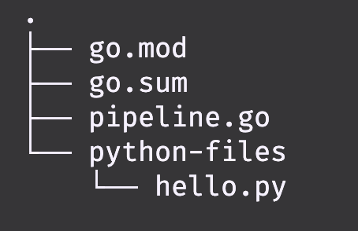

Create a new pipeline
Pseudo structure of the pipeline (in Go)
package main
func main() {
// Create a shared background context
// Run pipeline stages
stage()
}
func stage() {
// Create a Dagger client
// Define the code you want to run
}
For our example, we want to create a pipeline that does the following:
- Sets up a Docker container from a specific image.
- Takes a python file from a local directory on the host environment.
- Runs the python file in a Docker container.
- Copies the output from the Docker container to a local directory on the host environment.

Directories and files
We need to create some directories and files for this to work. This is what we are aiming for:

First create the go directory and initialize the Go module:
mkdir go
cd go
go mod init daggerpipeline
Then create the pipeline.go file:
touch pipeline.go
Add the following code to the pipeline.go file:
package main
import (
"context"
"fmt"
"dagger.io/dagger"
)
func main() {
// Create a shared context
ctx := context.Background()
// Run the stages of the pipeline
if err := Build(ctx); err != nil {
fmt.Println("Error:", err)
panic(err)
}
}
func Build(ctx context.Context) error {
// Initialize Dagger client
client, err := dagger.Connect(ctx)
if err != nil {
return err
}
defer client.Close()
python := client.Container().From("python:3.12.2-bookworm").
WithDirectory("python", client.Host().Directory("python-files")).
WithExec([]string{"python", "--version"})
python = python.WithExec([]string{"python", "python/hello.py"})
_, err = python.
Directory("output").
Export(ctx, "output")
if err != nil {
return err
}
return nil
}
We need to download the Go dependencies as well:
go mod tidy
Next, create a directory for the python file and add a python file called hello.py:
mkdir python-files
cd python-files
touch hello.py
The content of hello.py:
# Write to a file in a new directory called "output"
import os
os.makedirs("output", exist_ok=True)
with open("output/hello-from-python.txt", "w") as f:
f.write("Hello from Python in Dagger!\n")
All good now! Next, we will try and run it locally.
Remember to navigate back to the go directory before running Dagger!
You can also find the complete example here GitHub.